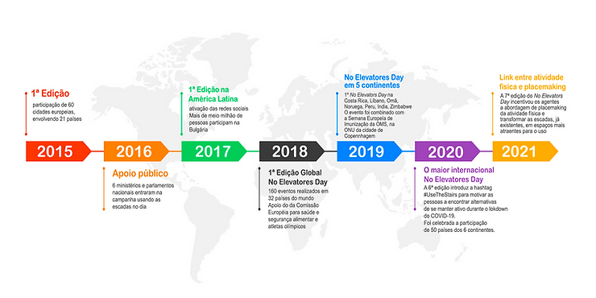
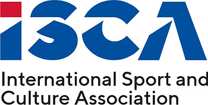
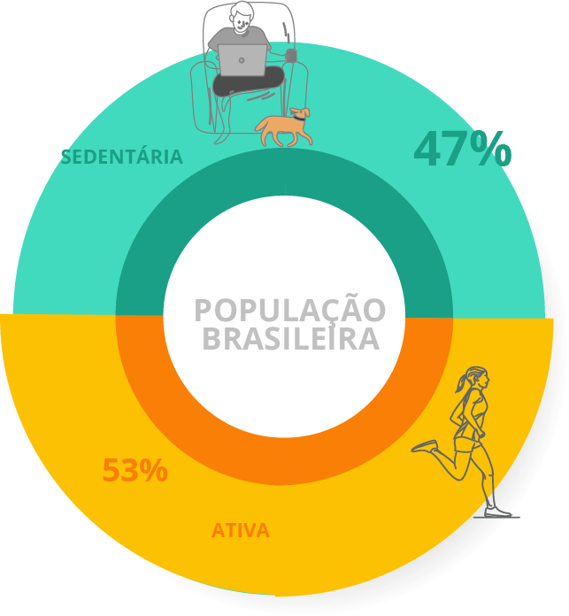
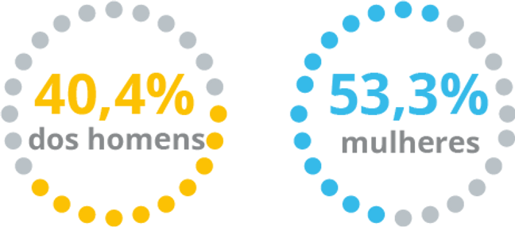

Hoje, 27 de Abril de 2022, é o Dia Sem Elevador (No Elevators Day)! Um evento organizado pela International Sport and Culture Association (ISCA) com o objetivo de aumentar a conscientização dos benefícios do esporte e da atividade física no dia-a-dia das pessoas.
Promovido toda última quarta-feira do mês de abril, o Dia Sem Elevador incentiva as pessoas, de maneira divertida e saudável, “a adicionar alguma atividade física ao seu dia-a-dia”. Por que não escolher usar as escadas?
A campanha foi lançada em 2015, como desdobramento da campanha NowWeMove, que propõe que cada um “encontre seu movimento“. Já está na sua 8ª edição e a participação vem crescendo a cada ano. Em 2018 se tornou um evento global.

O que é a ISCA?

A International Sport and Culture Association – ISCA, é uma associação não governamental que reúne organizações de todo mundo que trabalham no campo do esporte para todos, esportes recreativos e atividade física. Fundada em 1995, a ISCA conta com 260 organizações, de 89 países dos seis continentes, cujo slogan é “Moving People”.
É uma instituição que tem como objetivo promover e fortalecer os esforços da rede para aumentar a participação dos cidadãos no esporte recreativo e na atividade física.
Os números do sedentarismo
A Organização Mundial da Saúde (OMS) alertou em 2020, que “se a população em todo o mundo fosse mais ativa, até 5 milhões de mortes por ano poderiam ser evitadas” no momento que as pessoas estavam em casa devido à COVID-19. Com as informações, lançaram novas diretrizes sobre atividade física e comportamento sedentário. E recomendam que, pelo menos, 150 a 300 minutos de atividade aeróbica “moderada a vigorosa“, por semana para todos os adultos e uma média de 60 minutos por dia para crianças e adolescentes.
“Ser fisicamente ativo é fundamental para a saúde e o bem-estar e pode adicionar anos à vida e vida aos anos”, disse o diretor-geral da OMS, Tedros Adhanom Ghebreyesus. “Cada movimento conta (…). Devemos todos nos mover todos os dias – com segurança e criatividade” no lançamento das diretrizes.
Os números da OMS informam que 4 entre 5 adultos, assim como, 4 entre 5 adolescentes não praticam “atividade física suficiente”. A estimativa é de um custo de “US $54 bilhões em assistência médica direta e outros US $14 bilhões em perda de produtividade” . A OMS incentiva países a adotarem as diretrizes globais para que seja alcançada a redução da inatividade física em 15% até 2030.
Acompanhando os dados do Brasil, que é apontado como um dos maiores número de sedentários no mundo, a ABRAPESP considera preocupante a nossa situação e apoia ações de combate ao sedentarismo. Veja os números do Brasil.

47% da população adulta brasileira é sedentária. Sendo 40,4% dos homens e 53,3% das mulheres. O Brasil está entre os mais sedentários do mundo, à frente dos Estados Unidos (40%) e o mais sedentário da América Latina.

Hoje, 27 de abril de 2022, a ABRAPESP apoia a campanha do Dia Sem Elevador e convida todos a participarem da divulgação, como a que promovemos no INSTAGRAM. Afinal, com pequenos passos fazemos grandes mudanças.
#UseTheStairs
#NoElevatorsDay